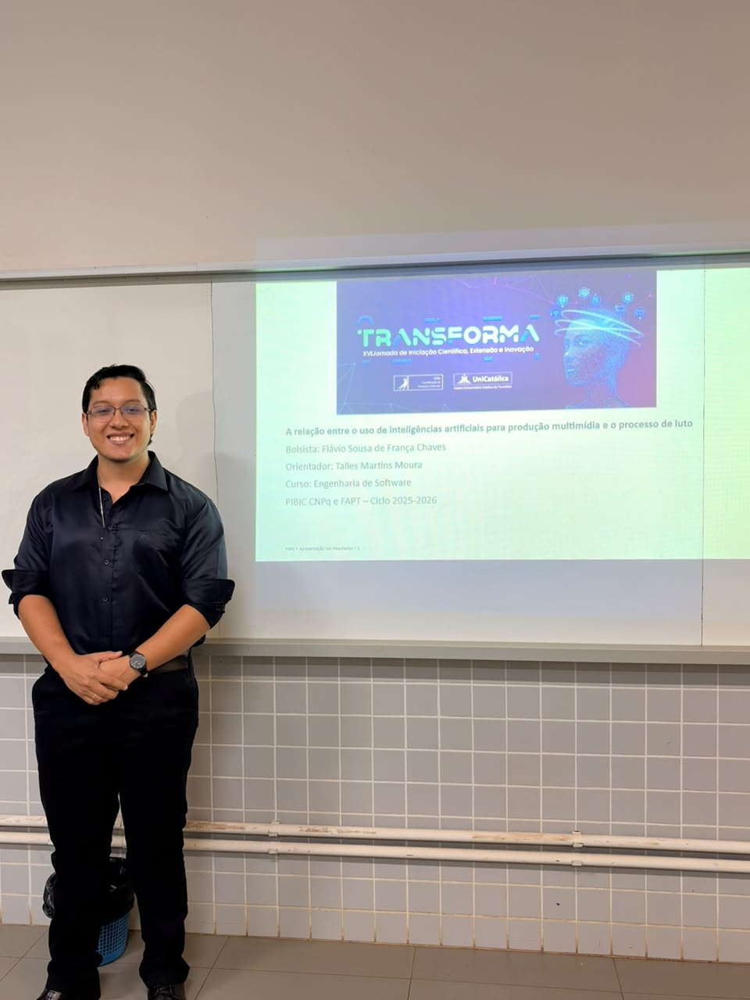

2026
OUT
07
07

Direitos Humanos
A IA na Produção Multimídia e o Processo de Luto
Uma análise interdisciplinar sobre os griefbots, a mercantilização do afeto e os limites dos direitos da personalidade post mortem.
Ler matéria completa →